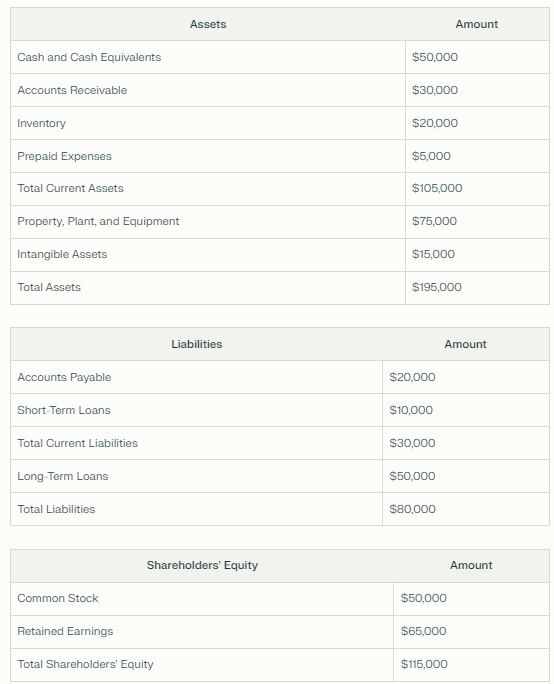

Finheim’s Guide to Long Term Investing in Stocks
2024-06-24
##Introduction
This book has been written, coded and compiled with the aim of making life easier for the long-term stock investor, as it is easy to get lost in the vast amount of data that countless companies listed on the stock exchanges generate.
Given this problem, I decided to explore the daily stock prices and fundamental data of companies with the aim of looking for profitable and financially healthy companies (although nothing written in this book is an investment recommendation).
As the financial market is in constant flux, this book will be too, which is why I’ll be updating this book quite frequently and selected GitHub as the mean of publishing (in programmers’ parlance: “committing”) it.
I’ve divided this book into two parts:
Fundamentals, where I explain the fundamentals behind the graphs plotted in this book (I recommend bookmarking this page in some way, as you’ll want to return to it often).
List of Companies, which have demonstrated good financial health and positive profitability (once again I reiterate: this book does not work with company recommendations).
If you want to contribute with the project, you can modify and/or improve the source code of the book in: “Link of Github here”. Also, you can share and discuss ideas for the project in our reddit group: “Link of Reddit here”.
Another thing: When I say “Long-term investment”, I mean holding a company in your portfolio for years, not trading methods that promise miraculous high returns in the short term.
#Fundamentals
The Internal Rate of Return (IRR) is a way of calculating the profitability of an investment considering contributions and sales of assets of various amounts (in this case, the sale only takes place at the end, and the contributions have constant values more the dividends distributed). We can interpret the IRR as an application of compound interest at more complex situations. In our case, the lump sum contributions plus dividends were calculated for a period of 10 years (or 5 years for newer companies on the stock exchange).
Net Income/Loss represents the company’s profitability after deducting all general, financial, depreciation and tax expenses. A company considered profitable for us is a company with increasing profits over the years.
In accounting, Research and Development are considered expenses, but for us, it is considered an investment.
When the annual “Expenses” of R&D increases, it means that the company is active with innovation and we could expect surprises for the future of the company and a possible increase of the Net income.
The balance sheet of a company financially represents everything that is used in the operation of the company alongside all its financial obligations. To do this, the balance sheet is divided into three main parts: assets, liabilities and shareholders’ equity.
Below is a simplified example of a balance sheet:

Assets are all the company’s property and rights, such as machinery and cash on hand, whether obtained with third-party capital (Liabilities) or owners’ capital (Equity).
Liabilities represent all the company’s financial obligations to third parties, such as debts and accounts payable.
If we subtract the assets from the total liabilities, we get the shareholders’ equity, which consists mainly of the company’s share capital. So, mathematically: Assets = Liabilities + Equity.
If we divide equity by total assets, we find the Equity Ratio, a metric that shows the proportion of total assets that is financed by shareholders’ capital. The higher this metric, the less the company depends on third-party capital and/or debt.
We can also divide assets and liabilities into current (or short-term) assets and liabilities. If we divide current assets by current liabilities, we get the Current Ratio, which shows the company’s ability to pay its short-term obligations with its short-term assets.
#Fundamentals
The Internal Rate of Return (IRR) is a way of calculating the profitability of an investment considering contributions and sales of assets of various amounts (in this case, the sale only takes place at the end, and the contributions have constant values more the dividends distributed). We can interpret the IRR as an application of compound interest at more complex situations. In our case, the lump sum contributions plus dividends were calculated for a period of 10 years (or 5 years for newer companies on the stock exchange).
Net Income/Loss represents the company’s profitability after deducting all general, financial, depreciation and tax expenses. A company considered profitable for us is a company with increasing profits over the years.
In accounting, Research and Development are considered expenses, but for us, it is considered an investment.
When the annual “Expenses” of R&D increases, it means that the company is active with innovation and we could expect surprises for the future of the company and a possible increase of the Net income.
The balance sheet of a company financially represents everything that is used in the operation of the company alongside all its financial obligations. To do this, the balance sheet is divided into three main parts: assets, liabilities and shareholders’ equity.
Below is a simplified example of a balance sheet:
Assets are all the company’s property and rights, such as machinery and cash on hand, whether obtained with third-party capital (Liabilities) or owners’ capital (Equity).
Liabilities represent all the company’s financial obligations to third parties, such as debts and accounts payable.
If we subtract the assets from the total liabilities, we get the shareholders’ equity, which consists mainly of the company’s share capital. So, mathematically: Assets = Liabilities + Equity.
If we divide equity by total assets, we find the Equity Ratio, a metric that shows the proportion of total assets that is financed by shareholders’ capital. The higher this metric, the less the company depends on third-party capital and/or debt.
We can also divide assets and liabilities into current (or short-term) assets and liabilities. If we divide current assets by current liabilities, we get the Current Ratio, which shows the company’s ability to pay its short-term obligations with its short-term assets.
#Companies